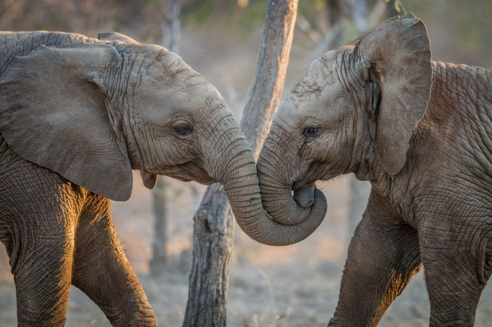

Elephant
 The IUCN’s best guess on the current population of Asian elephants, which inhabit 13 countries, is around 40,000–50,000. That number may be far lower; some regions inhabited by the lumbering pachyderms are inaccessible due to the terrain or to political volatility. Over 50% of the population is concentrated in India. The burgeoning human population there—and elsewhere in Asia—creates conflicts for space and resources. And while the tusks of Asian elephants are much smaller than those of their African counterparts, the Asian species is still poached for its ivory, meat, and skin.
Elephants are the largest land mammals on earth and have distinctly massive bodies, large ears, and long trunks. They use their trunks to pick up objects, trumpet warnings, greet other elephants, or suck up water for drinking or bathing, among other uses. Both male and female African elephants grow tusks and each individual can either be left- or right-tusked, and the one they use more is usually smaller because of wear and tear. Elephant tusks serve many purposes. These extended teeth can be used to protect the elephant's trunk, lift and move objects, gather food, and strip bark from trees. They can also be used for defense. During times of drought, elephants even use their tusks to dig holes to find water underground.